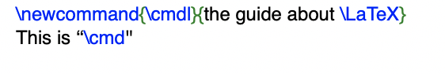

Latex Packages
Latex Macros
In LaTeX you can create your own commands, this commands are called macros.
How to create a macro
To add your own commands, use the command "\newcommand". Basically, the command requires two arguments:
the name of the command you want to create, and the definition of the command.
Note that the command name can but need not be enclosed in braces, as you like.
The num argument in square brackets is optional and specifies the number of arguments the new command takes
(up to 9 are possible). If missing it defaults to 0, i.e. no argument allowed.

Example of a macro
Name your new command \wbalTwo and not \wbal2 as digits cannot be used to name macros — invalid characters will error out at compile-time.
LaTeX will not allow you to create a new command that would overwrite an existing one. But there is a special command in case you explicitly want this:
\renewcommand. It uses the same syntax as the \newcommand command.
In certain cases you might also want to use the \providecommand command. It works like \newcommand,
but if the command is already defined, LaTeX will silently ignore the new command.

DeclareRobustCommand
Some commands are fragile, that is they fail in some environments.
If a macro works in body text but not in (for example) a figure caption,
it's worth trying to replace the \newcommand{\MyCommand}... declaration with
\DeclareRobustCommand{\MyCommand}... in the preamble.
This is especially true for macros which, when expanded, produce text that is written to a .aux file.